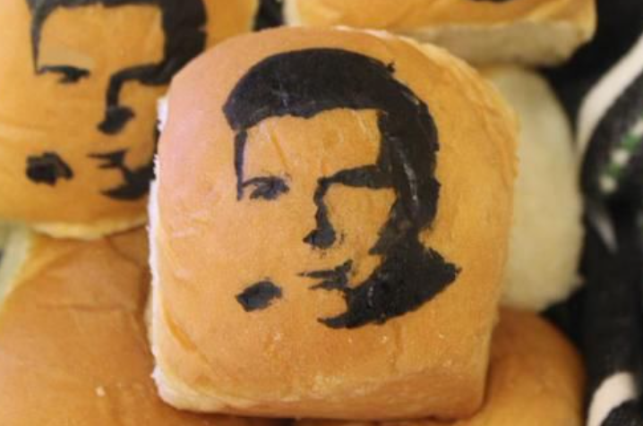

Above is a video example of a RickRoll. Below are examples of memes that are similar to RickRolls.
Here is a FrogRoll, it is exactly the same as the RickRoll except with the song "Crazy Frog" instead of the song by Rick Astely.
The RickRoll is not always exclusive to songs and audio, imagine recieving a box of fresh baked goods only to find Rick Astely's face engraved in to your bread rolls. Thus, a Rick... roll.

Lastly, theres the GummyRoll, once again, it is essentially a ripoff of the original RickRoll meme.